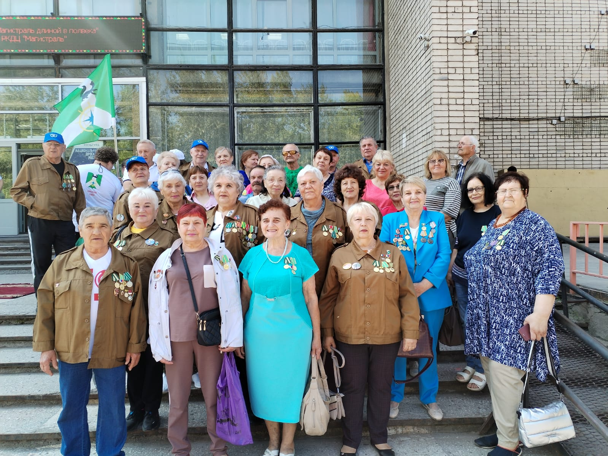
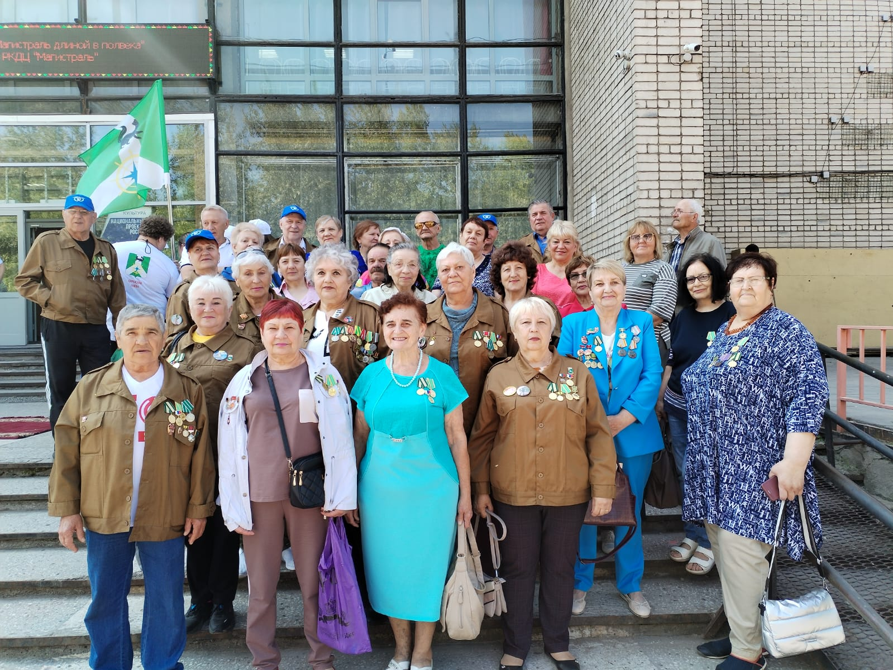

Проекты Северного десанта
КиноXоровод
Фестиваль кино для детей «КиноХоровод. Герои БАМа»
«КиноХоровод» - это фестиваль молодых талантов, который "Северный десант" организует
специально для подрастающего поколения. Сибирь талантлива, дадим проявить себя собственным звёздочкам.
К конкурсу фотографий, снятых на мобильный телефон, добавляем ещё два творческих испытания:
- смотр лучших короткометражных фильмов, созданных в дни работы десанта молодыми участниками,
- конкурс лучших очерков о бамовской семье.
К участию в последнем приглашаются все желающие.
- смотр лучших короткометражных фильмов, созданных в дни работы десанта молодыми участниками,
- конкурс лучших очерков о бамовской семье.
К участию в последнем приглашаются все желающие.
Обращения организаторов
Уполномоченная по правам ребёнка Иркутской области
Афанасьева Т. В.
Автор и руководитель фестиваля "Северный десант"
Жиндаева Т. Н.
Пожелания участников
… Со всей страны стекались в Сибирь, на стройку века – БАМ молодые люди. Многие нашли свою
половинку именно здесь, и до сих пор живут в построенных своими руками поселках дружной семьёй.
Расскажем о них миру! Присылайте нам свои истории - мы их опубликуем на своём официальном сайте и
сайтах наших партнеров и единомышленников, а во время «приземлений» десанта обязательно отметим лучших!
На "Северном десанте-2024", конечно, выступят известные, любимые российские актеры театра и кино. Но взрастим и собственные талантливые имена в волшебном мире кино вместе с детским «КиноХороводом». Будем вместе созидать и радовать мир искусством!
На "Северном десанте-2024", конечно, выступят известные, любимые российские актеры театра и кино. Но взрастим и собственные талантливые имена в волшебном мире кино вместе с детским «КиноХороводом». Будем вместе созидать и радовать мир искусством!
ДЕТСКИЙ ФЕСТИВАЛЬ "КИНОХОРОВОД"
Новый кинематографический проект - изюминка "Северного десанта - 2024". Юные кинолюбители
Восточной Сибири заранее прошли двухмесячный сценарный курс "Пишем свое кино" и подготовили 23 новеллы.
Комиссия отобрала 12 работ для съёмочного процесса, он будет длиться одну неделю в г.Усть-Куте. Юные северяне из 10 муниципальных образований Прибайкалья снимут свои короткие метры для детской кинолетописи «Герои БАМа» и представят их на конкурс. Две истории станут фильмами открытия и закрытия фестиваля, которые состоятся 30 июня и 6 июля.
Церемонии открытия форума, подведения итогов и награждения победителей киносмотра представляют собой зрелищные мероприятия, которые запомнятся участникам, их родителям, кураторам и гостям.
На фестивале юные кинематографисты пройдут несколько мастер-классов по режиссуре, актёрскому и операторскому мастерству, что поможет им успешно воплотить свои творческие замыслы в жизнь.
В коротких метрах дебютантов снимутся не только юные участники фестиваля и их родители, но и профессиональные артисты, которые выступят в составе "Северного десанта":
Алексей Барабаш, Ольга Хохлова, Алеса Качер, Александр Песков.
В команде "КиноХоровода" опытные организаторы и кинематографисты:
Наталья Тириакиди - директор,худрук;
Анна Харламенко - сценарист-наставник;
Юлия Горбачевская - главный режиссер;
Наталя Мажуга - кастинг-директор;
Алексей Стеценко - музыкальный директор;
Марат Абдурашитов - технический директор;
Вера Таюрская - пресс-секретарь.
Автор и руководитель “Северного десанта” и фестиваля кино для детей “КиноХоровод” - Татьяна Жиндаева, журналист, продюсер, предприниматель, автор ряда телевизионных проектов, член Союза журналистов России.
Комиссия отобрала 12 работ для съёмочного процесса, он будет длиться одну неделю в г.Усть-Куте. Юные северяне из 10 муниципальных образований Прибайкалья снимут свои короткие метры для детской кинолетописи «Герои БАМа» и представят их на конкурс. Две истории станут фильмами открытия и закрытия фестиваля, которые состоятся 30 июня и 6 июля.
Церемонии открытия форума, подведения итогов и награждения победителей киносмотра представляют собой зрелищные мероприятия, которые запомнятся участникам, их родителям, кураторам и гостям.
На фестивале юные кинематографисты пройдут несколько мастер-классов по режиссуре, актёрскому и операторскому мастерству, что поможет им успешно воплотить свои творческие замыслы в жизнь.
В коротких метрах дебютантов снимутся не только юные участники фестиваля и их родители, но и профессиональные артисты, которые выступят в составе "Северного десанта":
Алексей Барабаш, Ольга Хохлова, Алеса Качер, Александр Песков.
В команде "КиноХоровода" опытные организаторы и кинематографисты:
Наталья Тириакиди - директор,худрук;
Анна Харламенко - сценарист-наставник;
Юлия Горбачевская - главный режиссер;
Наталя Мажуга - кастинг-директор;
Алексей Стеценко - музыкальный директор;
Марат Абдурашитов - технический директор;
Вера Таюрская - пресс-секретарь.
Автор и руководитель “Северного десанта” и фестиваля кино для детей “КиноХоровод” - Татьяна Жиндаева, журналист, продюсер, предприниматель, автор ряда телевизионных проектов, член Союза журналистов России.
СЕВЕРНЫЙ ДЕСАНТ: КИНОЛЕТОПИСЬ БАМа СНИМАЮТ ДЕТИ
Культурный проект «Северный десант» расширил свой формат, он стал закладывать кинолетопись «Герои БАМа»
в рамках фестиваля кино для детей «КиноХоровод».
30 июня состоялась церемония открытия фестиваля. Она прошла в необычном формате: торжественная линейка,
рапорты о подготовке команд, речевки, флаги, поднятие знамени фестиваля, участие ветеранов - бамовцев,
концерт. Это вдохновило юных кинематографистов, "окрылило" их желания оставить свой след в трудовой
истории - показать БАМ своими глазами.
Про стройку века сняты сотни художественных и документальных фильмов, но впервые игровое кино снимают дети от 7 до 17 лет. Они воплощают в жизнь 12 конкурсных короткометражных фильмов, в которых выступают как сценаристы, режиссеры, операторы актеры, монтажеры, костюмеры - все кинопрофессии осваиваются ими прямо на киноплощадках. Съемки проходят в г.Усть-Кут.
В создании «короткометражек» участвуют команды из 10 муниципальных образований Иркутской области: г. Иркутска, г. Братска, г. Усть-Кута, Братского, Нижнеилимского, Усть-Кутского, Казачинско-Ленского, Жигаловского, Качугского, Киренского районов.
Началось всё со сценарного курса "Пишем свое кино", на котором участники написали свои тематические новеллы. В основе каждой новеллы - подлинная история строителей магистрали.
Далее были созданы киногруппы. Они приступили к подготовке съемочного процесса : подбирали локации, костюмы, реквизит, актеров, делали раскадровки и пробные кадры.
Непростая, ответственная задача поставлена перед командами – художественно и исторически достоверно реализовать свои кинопроекты и принять участие в конкурсе.
Сам съёмочный процесс активно пошел уже на фестивале.
Работа на съёмочных площадках "кипит": юные кинематографисты с азартом и полной отдачей, как самые настоящие профессионалы, работают над воплощением 12 киноисторий, которые отобрало жюри. Справиться со столь серьёзным заданием ребятам помогают наставники - профессионалы из Москвы, Санкт-Петербурга, Иркутска, чья деятельность связана с кинематографом.
Директор и худрук проекта - Наталья Тириакиди;
главный режиссер - Юлия Горбачевская;
программный директор - Наталия Мажуга;
музыкальный директор - Алексей Стеценко;
технический директор - Марат Абдурашитов;
сценарист-наставник - Анна Харламенко.
Они проводят для юных «киноделов» уроки сценарного мастерства, режиссуры, операторской работы, видеомонтажа, музыкального оформления, подсказывают все необходимые техники кинопроизводства. К ним присоединились известные, любимые актёры театра и кино:
Алексей Барабаш, Ольга Хохлова, Алеса Качер, Александр Песков.
Актёры приехали в Усть - Кут в составе "Северного десанта". Мастера экрана делятся с детьми секретами актерского мастерства и принимают участие в съемка их фильмов.
"В год 50-летия БАМа показать зрителям судьбы героев-бамовцев, обозначить значимость их историй в формировании гражданской идентичности подрастающего поколения - это вклад
в будущее нашей родины", — считает Татьяна Жиндаева, директор ООО «ТМИН», продюсер и руководитель культурного проекта «Северный десант» и детского кинофестиваля «КиноХоровод».
"Творческий проект «Северный десант» развивается, выходя за рамки привычных форматов. В этом году впервые проходит фестиваль «КиноХоровод».
Не могу сейчас предположить, как именно представители нового поколения осмыслят события 50-летней давности, но уверена, что мы станем свидетелями увлекательного и – главное - успешного творческого эксперимента. Желаю всем его участникам удачного дебюта, сильнейшим - побед, а зрителям – незабываемых эмоций от встречи с новыми авторскими работами!",
- из приветствия Марины Седых, генерального директора АО "ИНК-Капитал", председателя правления Благотворительного фонда Марины Седых.
"Организаторов и участников фестиваля радует, что районная и городская администрации Усть-Кута активно помогают «КиноХороводу».
Мэр района Сергей Анисимов и глава города Евгений Кокшаров задействовали все структуры, подключили депутатов. Поддержку оказывает бамовское сообщество, его руководитель Лариса Норина, Восточно-Сибирская железная дорога и многие другие.
Не остались в стороне и мэры районов, чьи команды задействованы в фестивале. Они выделяют транспорт, экипировку для своих команд, решают другие вопросы, за что им огромная благодарность",
- сообщила автор культурного проекта «Северный десант», в рамках которого проходит детский кинофорум, Татьяна Жиндаева.
Фестиваль «КиноХоровод. Герои БАМа» проводится при активном участии
Благотворительного фонда Марины Седых,
Уполномоченного по правам ребенка Татьяны Афанасьевой,
Министерства социального развития, опеки и попечительства Иркутской области,
Министерства культуры Иркутской области,
ООО «ИНК», ООО «ТМИН», ООО «СИБНА», ООО «РСТ МОСТ»,
АО «Международный аэропорт «Иркутск»,
киностудий «Мосфильм» и «Ленфильм» и др.
Информационную поддержку оказывают партнеры десанта телекомпании ИГ ТРК, АИСТ, НТС, ТиВиСи,
спутниковое телевидение «Триколор», Радио «Шансон», газета «Областная», ИА «Телеинформ», ТРК «Диалог» и МП РОПГ «Ленские вести».
Про стройку века сняты сотни художественных и документальных фильмов, но впервые игровое кино снимают дети от 7 до 17 лет. Они воплощают в жизнь 12 конкурсных короткометражных фильмов, в которых выступают как сценаристы, режиссеры, операторы актеры, монтажеры, костюмеры - все кинопрофессии осваиваются ими прямо на киноплощадках. Съемки проходят в г.Усть-Кут.
В создании «короткометражек» участвуют команды из 10 муниципальных образований Иркутской области: г. Иркутска, г. Братска, г. Усть-Кута, Братского, Нижнеилимского, Усть-Кутского, Казачинско-Ленского, Жигаловского, Качугского, Киренского районов.
Началось всё со сценарного курса "Пишем свое кино", на котором участники написали свои тематические новеллы. В основе каждой новеллы - подлинная история строителей магистрали.
Далее были созданы киногруппы. Они приступили к подготовке съемочного процесса : подбирали локации, костюмы, реквизит, актеров, делали раскадровки и пробные кадры.
Непростая, ответственная задача поставлена перед командами – художественно и исторически достоверно реализовать свои кинопроекты и принять участие в конкурсе.
Сам съёмочный процесс активно пошел уже на фестивале.
Работа на съёмочных площадках "кипит": юные кинематографисты с азартом и полной отдачей, как самые настоящие профессионалы, работают над воплощением 12 киноисторий, которые отобрало жюри. Справиться со столь серьёзным заданием ребятам помогают наставники - профессионалы из Москвы, Санкт-Петербурга, Иркутска, чья деятельность связана с кинематографом.
Директор и худрук проекта - Наталья Тириакиди;
главный режиссер - Юлия Горбачевская;
программный директор - Наталия Мажуга;
музыкальный директор - Алексей Стеценко;
технический директор - Марат Абдурашитов;
сценарист-наставник - Анна Харламенко.
Они проводят для юных «киноделов» уроки сценарного мастерства, режиссуры, операторской работы, видеомонтажа, музыкального оформления, подсказывают все необходимые техники кинопроизводства. К ним присоединились известные, любимые актёры театра и кино:
Алексей Барабаш, Ольга Хохлова, Алеса Качер, Александр Песков.
Актёры приехали в Усть - Кут в составе "Северного десанта". Мастера экрана делятся с детьми секретами актерского мастерства и принимают участие в съемка их фильмов.
"В год 50-летия БАМа показать зрителям судьбы героев-бамовцев, обозначить значимость их историй в формировании гражданской идентичности подрастающего поколения - это вклад
в будущее нашей родины", — считает Татьяна Жиндаева, директор ООО «ТМИН», продюсер и руководитель культурного проекта «Северный десант» и детского кинофестиваля «КиноХоровод».
"Творческий проект «Северный десант» развивается, выходя за рамки привычных форматов. В этом году впервые проходит фестиваль «КиноХоровод».
Не могу сейчас предположить, как именно представители нового поколения осмыслят события 50-летней давности, но уверена, что мы станем свидетелями увлекательного и – главное - успешного творческого эксперимента. Желаю всем его участникам удачного дебюта, сильнейшим - побед, а зрителям – незабываемых эмоций от встречи с новыми авторскими работами!",
- из приветствия Марины Седых, генерального директора АО "ИНК-Капитал", председателя правления Благотворительного фонда Марины Седых.
"Организаторов и участников фестиваля радует, что районная и городская администрации Усть-Кута активно помогают «КиноХороводу».
Мэр района Сергей Анисимов и глава города Евгений Кокшаров задействовали все структуры, подключили депутатов. Поддержку оказывает бамовское сообщество, его руководитель Лариса Норина, Восточно-Сибирская железная дорога и многие другие.
Не остались в стороне и мэры районов, чьи команды задействованы в фестивале. Они выделяют транспорт, экипировку для своих команд, решают другие вопросы, за что им огромная благодарность",
- сообщила автор культурного проекта «Северный десант», в рамках которого проходит детский кинофорум, Татьяна Жиндаева.
Фестиваль «КиноХоровод. Герои БАМа» проводится при активном участии
Благотворительного фонда Марины Седых,
Уполномоченного по правам ребенка Татьяны Афанасьевой,
Министерства социального развития, опеки и попечительства Иркутской области,
Министерства культуры Иркутской области,
ООО «ИНК», ООО «ТМИН», ООО «СИБНА», ООО «РСТ МОСТ»,
АО «Международный аэропорт «Иркутск»,
киностудий «Мосфильм» и «Ленфильм» и др.
Информационную поддержку оказывают партнеры десанта телекомпании ИГ ТРК, АИСТ, НТС, ТиВиСи,
спутниковое телевидение «Триколор», Радио «Шансон», газета «Областная», ИА «Телеинформ», ТРК «Диалог» и МП РОПГ «Ленские вести».
Фото героев-бамовцев и актёров
 

Мобилография
Мир через объектив
Мобильная фотография - один из самых молодых видов искусства. Ежедневно мы с помощью гаджетов запечатлеваем приятные
моменты своей жизни, не задумываясь об этом! Делаем снимки ради памяти или лайков в соцсетях. А есть люди,
по-настоящему талантливые, которые фотографируют жизнь ради того, чтобы поделиться с широкой публикой незамеченными
никем интересными моментами. И учатся этому специально у мастеров, вместе двигая в жизнь молодое искусство.
В рамках экспедиции большим успехом пользуется именно такая онлайн-школа, которая обучает молодёжь видеть мир через объектив. Лучшие снимки выпускников были представлены на передвижной фотовыставке.
В рамках экспедиции большим успехом пользуется именно такая онлайн-школа, которая обучает молодёжь видеть мир через объектив. Лучшие снимки выпускников были представлены на передвижной фотовыставке.
ОНЛАЙН-ШКОЛА
Второй год в рамках культурного проекта "Северный десант" работает онлайн-школа "Мобилография".
Педагог-мастер - Гюнай Расимовна Мусаева, талантливый профессиональный фотохудожник из Перми. В её портфолио такие большие события, как «Дягилевский фестиваль», портреты известных деятелей искусств – дирижера Теодора Курентзиса, прима-балерины Дианы Вишневой, хореографа Алексея Мирошниченко и др.
С 1 апреля по 30 мая проходят в школе обучение дети и взрослые. Бесплатно. Благодаря главному партнеру десанта - Иркутской нефтяной компании. Два раза в неделю (суббота, воскресение) даётся теория (тематические лекции о том, как качественно снимать на мобильный телефон) и домашнее задание - фотографии по пройденному материалу. По разной тематике. 50 человек прошли курс обучения в этом году.
Педагог-мастер - Гюнай Расимовна Мусаева, талантливый профессиональный фотохудожник из Перми. В её портфолио такие большие события, как «Дягилевский фестиваль», портреты известных деятелей искусств – дирижера Теодора Курентзиса, прима-балерины Дианы Вишневой, хореографа Алексея Мирошниченко и др.
С 1 апреля по 30 мая проходят в школе обучение дети и взрослые. Бесплатно. Благодаря главному партнеру десанта - Иркутской нефтяной компании. Два раза в неделю (суббота, воскресение) даётся теория (тематические лекции о том, как качественно снимать на мобильный телефон) и домашнее задание - фотографии по пройденному материалу. По разной тематике. 50 человек прошли курс обучения в этом году.
ВЫСТАВКА
Каждый снимок в школе разбирается педагогом и авторами совместно. Лучшие, путём
внутреннего голосования, были отобраны для экспозиции. Фотовыставка побывала во всех точках дорожной карты десанта. А их 17!
Руководитель проекта Татьяна Жиндаева вручала выпускникам школы сертификаты об окончании курса, а победителям
конкурса на лучший снимок - благодарности, подарки и денежные премии.
КОНКУРС
На выставке разместили лучшие фотографии учащихся "МобилоГрафии", победителей среди них определили демократично,
не только решением педагога, но и согласно детского волеизъявления.
Победители конкурса 2023
первое место - Михаил Назаров, 12 лет, пос. Казарки Усть-Кутского района.
второе место - Никита Гаврилов, 16 лет, г. Усть-Кут.
третье место - Алексей Назаров, 12 лет, пос. Казарки Усть-Кутского района.
ПРИЗ ЗРИТЕЛЬСКИХ СИМПАТИЙ
В каждом населенном пункте снимки фотовыставки активно обсуждались.
У организаторов возникла идея предоставить и посетителям возможность выбрать лучшую работу.
Приза зрительских симпатий удостоились:
Светлана Мухина, 13 лет, г. Иркутск, за фото "Птичка - синичка" и "Отражение солнца на камнях";
Михаил Назаров, 12 лет, п. Казарки, за фото "Девушка в степи";
Дарья Лыкова, 13 лет, г. Киренск, за фото "Буренка на отдыхе";
Мила Изосимова, 12 лет, г. Иркутск, за снимок «Купание солнца в листве»;
Вероника Коростелёва,11 лет, г. Иркутск, за снимок "Кот о жизни".
Михаил Назаров, 12 лет, п. Казарки, за фото "Девушка в степи";
Дарья Лыкова, 13 лет, г. Киренск, за фото "Буренка на отдыхе";
Мила Изосимова, 12 лет, г. Иркутск, за снимок «Купание солнца в листве»;
Вероника Коростелёва,11 лет, г. Иркутск, за снимок "Кот о жизни".

Птичка - синичка

Отражение солнца на камнях

Девушка в степи

Буренка на отдыхе

Купание солнца в листве

Кот о жизни